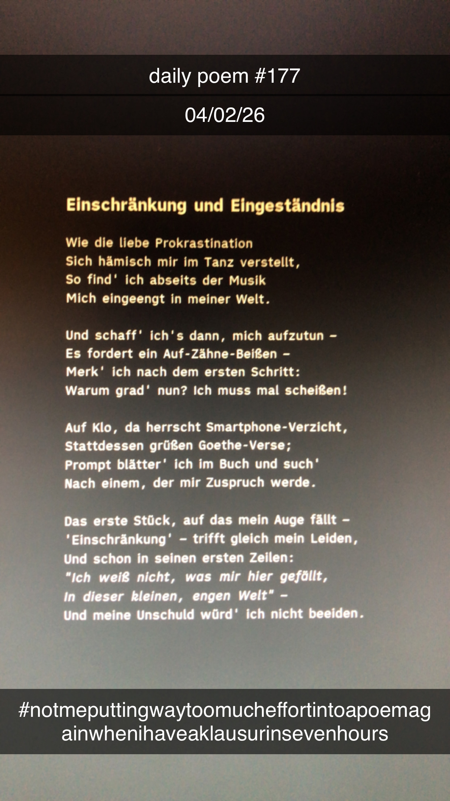

Einschränkung und Eingeständnis
[177]Wie die liebe Prokrastination
Sich hämisch mir im Tanz verstellt,
So find' ich abseits der Musik
Mich eingeengt in meiner Welt.
Und schaff' ich's dann, mich aufzutun –
Es fordert ein Auf-Zähne-Beißen –
Merk' ich nach dem ersten Schritt:
Warum grad' nun? Ich muss mal scheißen!
Auf Klo, da herrscht Smartphone-Verzicht,
Stattdessen grüßen Goethe-Verse;
Prompt blätter' ich im Buch und such'
Nach einem, der mir Zuspruch werde.
Das erste Stück, auf das mein Auge fällt –
'Einschränkung' – trifft gleich mein Leiden,
Und schon in seinen ersten Zeilen:
"Ich weiß nicht, was mir hier gefällt,
In dieser kleinen, engen Welt" –
Und meine Unschuld würd' ich nicht beeiden.
